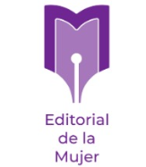

El Observatorio sobre Violencia de Género en Medios de Comunicación
(OVGMC) surge como uno de los resultados del proyecto “No Más: prevención y respuesta a la violencia
de género contra las mujeres en Cuba”.
“No más…” es una iniciativa impulsada por la Federación de Mujeres Cubanas (FMC), la Editorial de la
Mujer, la asociación italiana COSPE, el Centro Martin Luther King, en alianza con el Grupo Galfisa
del Instituto de Filosofía y la Unión Nacional de Juristas de Cuba (UNJC); con el apoyo de la Unión
Europea en Cuba.
Desde finales de 2024, el proyecto busca contribuir a la prevención y repuesta de la violencia de
género en el país a partir de procesos y acciones encaminadas al cambio de imaginarios sociales, el
fortalecimiento de la atención a víctimas y la participación de grupos de mujeres en la respuesta
territorial. “No más…” se implementa en seis municipios cubanos: Marianao y Plaza de la Revolución
en La Habana; Bayamo en la provincia Granma; el municipio cabecera Las Tunas; el municipio El
Salvador y Guantánamo, en el extremo suroriental.
El OVGMC de la Editorial de la Mujer constituye una plataforma de monitoreo y análisis del
tratamiento mediático de la violencia contra las mujeres, tanto en la prensa como en entornos
digitales de los territorios donde se desarrolla el proyecto. En este sentido, permite:
Analizar las narrativas mediáticas sobre la violencia de género.
Proponer indicadores que cuestionen estereotipos y desigualdades.
Generar recomendaciones para un tratamiento comunicativo responsable, evitando la revictimización.
Identificar buenas prácticas en la cobertura del tema.
Autoras del primer corte del OVGMC: Yuset Puig Pupo, Iris Neysi Hernández Rodríguez y Adalys Ray Haynes.
En 2025 el estudio puso el foco en la Jornada 16 días de activismo contra la violencia de género que
comienza el 25 de noviembre, Día Internacional para Eliminar la Violencia contra las mujeres y las
niñas, y se extiende hasta el 10 de diciembre, Día Internacional de los Derechos Humanos.
• Las versiones impresas de los periódicos que tienen una frecuencia semanal fueron analizadas las
dos últimas ediciones de noviembre y las dos primeras de diciembre de 2025.
• Los canales de publicación digital: Del 25 de noviembre al 10 de diciembre de 2025.
• Radios, telecentros, corresponsalía y Portal Ciudadano: Análisis de las narrativas periodísticas
sobre VCM trasmitidas del 25 de noviembre al 10 de diciembre de 2025.
La muestra es resultado de una observación y selección profunda del sistema de comunicación social
en el ámbito mediático al servicio de los seis municipios incluidos en el proyecto.
Definimos así las nueves instituciones mediáticas implicadas pertenecientes a la radio, la
televisión, prensa escrita, corresponsalías y plataformas digitales.
Radio/TV analizados
Prensa escrita
Medios digitales
Responde esta encuesta. Podrás monitorear tu propio medio de prensa y a la vez comparar tu realidad con la de otros medios.